Von unter Spannung stehenden Teilen der Fahrleitungsanlage geht ein erhebliches Gefährdungspotenzial aus. Es muss stets angenommen werden, dass alle aktiven Teile unter Spannung stehen, solange sie nicht ausgeschaltet und sichtbar bahngeerdet bzw. mit dem Rückleiter verbunden (kurzgeschlossen) sind und die Arbeiten freigegeben sind. Zu den aktiven Teilen gehören bei den Oberleitungsanlagen neben Fahrdrähten/Oberleitungsstromschienen und Tragseilen u. a. auch Teile der Quertragwerke (Abb. 4-3), die Abspannungen (Abb. 4-1), die Rohrausleger und andere Teile der Oberleitungsstützpunkte, Speiseleitungen und andere an den Oberleitungsmasten mitgeführte Leitungen, Isolatoren sowie bei Gleichstrom-S-Bahn-Anlagen die Stromschienen. Die folgenden Ausführungen betreffen Arbeiten in der Nähe von Fahrleitungen, nicht die Arbeiten an Fahrleitungen.
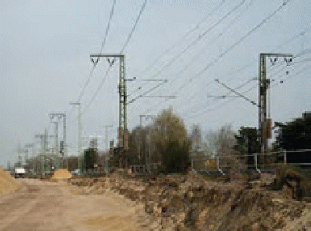
| Abb. 4-1: | Oberleitungsanlage mit Abspannleitungen sowie Speiseleitung auf den Oberleitungsmasten. |
Vor Beginn der Arbeiten im Gleisbereich prüft der ausführende Unternehmer im Rahmen einer Gefährdungsbeurteilung, ob Arbeiten in der Nähe (vgl. Skizze in Anhang 10) unter Spannung stehender Teile von Fahrleitungsanlagen ausgeführt werden und Beschäftigte dabei, ggf. auch unbeabsichtigt, mit Material, Maschinen oder Geräten den Schutzabstand zu unter Spannung stehenden Teilen der Fahrleitungsanlage unterschreiten können. Beim Unterschreiten des Schutzabstands kann eine weitere Annäherung an unter Spannung stehende Teile der Fahrleitungsanlage schon für einen tödlichen elektrischen Schlag ausreichen, ohne diese überhaupt zu berühren (Überschlag). Fahrleitungen, die zwar ausgeschaltet, aber nicht vorschriftsmäßig bahngeerdet/kurzgeschlossen sind, können trotz Ausschaltung unter tödlicher Induktionsspannung stehen.
Bei dieser Gefährdungsbeurteilung sind z. B. zu berücksichtigen:
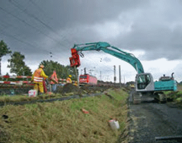
| Abb. 4-2: | Einsatz einer Ramme in der Nähe unter Spannung stehender Teile der Oberleitungsanlage. |
Können Beschäftigte in die Nähe unter Spannung stehender Teile einer Fahrleitungsanlage geraten oder sogar den Schutzabstand unterschreiten, muss dies der ausführende Unternehmer der BzS anzeigen, die dann die erforderlichen Sicherheitsmaßnahmen festlegt.
Für die Entscheidung bzgl. Ausschalten des betreffenden Fahrleitungsabschnitts muss gemäß [1] das vorhersehbare Verhalten der Beschäftigten, also auch menschliches Fehlverhalten, berücksichtigt werden. Dieses spielt bei ausgeschalteter und bahngeerdeter Fahrleitung keine Rolle mehr. Das Ausschalten und Bahnerden/ Kurzschließen der Fahrleitung ist also immer vorrangig zu prüfen.
Arbeiten an rückstromführenden Teilen wie z. B. das Entfernen von Gleis- und Schienenverbindern oder Erdungsleitungen von Masten oder Trennschnitte an Schienen, können bei unsachgemäßer Ausführung zu hohen Berührungsspannungen führen. Deshalb sind vorher immer Ersatzmaßnahmen zur Gewährleistung der Rückstromführung und Bahnerdung/Verbindung mit dem Rückleiter zu planen und anzuwenden (DB AG: Ril 824.0105 [29]).
Rückstromführung und Bahnerdungen dürfen nicht unterbrochen werden. Abdeckungen von Schienenanschlüssen der Rückleiter und Betriebserden an den Fahrschienen (DB AG: Ril 824.0105 [29]) dürfen nur von befähigtem Personal des Bahnbetreibers gelöst werden. Werden diese Verbindungen (z. B. Betriebserden von elektrischen Weichenheizanlagen, Abb. 4-12) unwirksam, kann Lebensgefahr für Personen im Bereich dieser elektrischen Anlagen bestehen.
Wenn Sicherheitsmaßnahmen (Bahnerden/Kurzschließen) außerhalb des eigentlichen Bauabschnitts ausgeführt werden, sind für diese Tätigkeiten ggf. zusätzliche Sicherungsmaßnahmen notwendig (z. B. Warnung vor Zugfahrten im Arbeitsgleis oder Nachbargleis).
Die anstehende Spannung sowie Art und Lage der unter Spannung stehenden Teile können je nach Bahnart, Bahnbetreiber, Bauart der Fahrleitung und Örtlichkeit unterschiedlich sein. Im Bereich der DB beträgt die Spannung der Oberleitung 15 kV. Die Fahrdrahthöhe beträgt im Regelfall 5,50 m über Schienenoberkante. Sie kann aber auch niedriger sein (z. B. unter Brücken bis zu 4,95 m oder im S-Bahntunnel bis zu 4,80 m). Die notwendigen Angaben wie z. B. Schaltzustand und Speiseverhältnisse, Höhenlage, Grenzen eines ausgeschalteten Abschnitts, rückstromführende Anlagenteile, Erdungsanschlusspunkte, Regelungen zur Abschaltung bei Gefahr und zu den erforderlichen Sicherheitsmaßnahmen und Ansprechpartnern erhält der ausführende Unternehmer von der BzS/dem Bahnbetreiber, bei der DB durch eine örtliche Einweisung durch den Anlagenverantwortlichen/Anlagenbeauftragten für die Fahrleitungsanlage gemäß Ril 809 [30] und Ril 132.0123A01 bzw. 132.0123A04 [26] und über die Betriebs- und Bauanweisung (Betra).
Die für den Bahnbetrieb zuständige Stelle (BzS) prüft im Rahmen einer Gefährdungsbeurteilung, ob die Fahrleitung im Arbeitsbereich ausgeschaltet werden kann. Es gilt der Grundsatz, dass das Ausschalten (Beseitigen der Gefahr) gemäß Arbeitsschutzgesetz [1] stets Vorrang vor dem Schutz durch Abdeckung/Abschrankung oder Abstand hat.
Bei der DB sind Fahrleitungen, in deren Nähe gearbeitet werden soll, grundsätzlich auszuschalten [26]. Wenn dies mit den bestehenden Schaltgruppen nicht möglich ist, da der Bahnbetrieb z. B. in benachbarten Gleisen dadurch behindert würde, ist der Einbau von Streckentrennern bzw. Isolatoren für die Bauzeit zu prüfen, um die Abschaltung im Arbeitsbereich zu ermöglichen (Abb. 4-3).
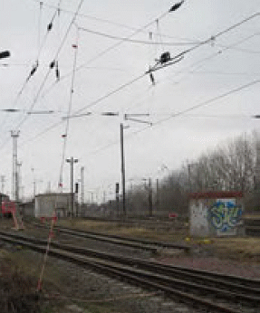
| Abb. 4-3: | Streckentrenner |
Beim Ausschalten von Fahrleitungsabschnitten müssen die 5 Sicherheitsregeln der Elektrotechnik eingehalten werden: 1. Ausschalten, 2. gegen Wiedereinschalten sichern, 3. Spannungsfreiheit feststellen (Abb. 4-4), 4. Erden und Kurzschließen (Abb. 4-5). Der 5. Schritt „benachbarte unter Spannung stehende Teile abdecken oder abschranken“ ist i. d. R. auf Gleisbaustellen, bei denen in der Nähe von Fahrleitungen gearbeitet wird, nicht anwendbar. Es sind stattdessen auch diese Fahrleitungsabschnitte bzw. Teile der Fahrleitungsanlage auszuschalten oder jederzeit der Schutz durch Abstand sicher zu gewährleisten. Dies kann ggf. eine Aufsichtführung durch befähigte Elektrofachkräfte bzw. elektrotechnisch unterwiesene Personen erfordern.
Nach Ausschaltung und Bahnerdung/Kurzschließung der Fahrleitung bzw. der Teile der Fahrleitungsanlage und vor Arbeitsaufnahme gibt der Arbeitsverantwortliche die Arbeitsstelle frei. Ausschalten und Wiederinbetriebnahme der Fahrleitungsabschnitte erfolgen durch vom Bahnbetreiber befähigte Personen. Die Grenzen des ausgeschalteten Arbeitsbereichs sind meist die Erdungs- und Kurzschließvorrichtungen in Längsrichtung, aber auch markante Punkte (Weichen, Maste, Signale, Isolatoren, Trenner, Abb. 4-3). Diese müssen bei der Freigabe eindeutig benannt werden und für Arbeiten bei Dunkelheit kenntlich gemacht sein.
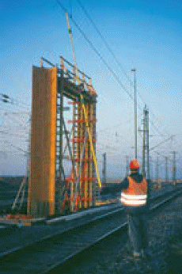
| Abb. 4-4: | Feststellen der Spannungsfreiheit durch Fachpersonal vor Arbeitsbeginn. |
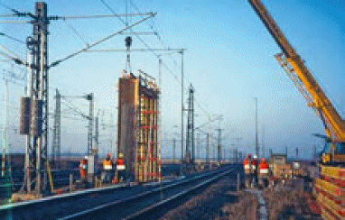
| Abb. 4-5: | Kranarbeiten bei ausgeschalteter Fahrleitung: Vor und hinter der Arbeitsstelle ist eine Bahnerdungsvorrichtung eingebaut. |
Abhängig von der Nennspannung sind bei nicht elektrotechnischen Arbeiten folgende Mindestschutzabstände zu unter Spannung stehenden Teilen der elektrischen Anlagen ohne Schutz gegen direktes Berühren, auch mit Geräten, Werkzeugen, Werkstücken, angeschlagenen Lasten bei Hebezeugarbeiten, einzuhalten [13]:
| Nennspannung [kV] | Schutzabstand [m] (Abstand in Luft von ungeschützten unter Spannung stehenden Teilen) |
| bis 1 | 1,0 |
| über 1 bis 110 | 3,0 |
| über 110 bis 220 | 4,0 |
| über 220 bis 380 | 5,0 |
| Tabelle 4-1: | Schutzabstände bei nicht elektrotechnischen Arbeiten abhängig von der Nennspannung. |
Abweichend von Tabelle 4-1 dürfen gemäß DIN VDE 0105-103 [39] die Schutzabstände bei Eisenbahnen wie nachfolgend verkürzt werden, sofern die Beschäftigten im Rahmen der bahntechnischen Unterweisung bezüglich der ihnen übertragenen Aufgaben über die möglichen elektrischen Gefahren bei unsachgemäßem Verhalten unterrichtet sowie über die notwendigen Verhaltensregeln belehrt wurden.
Bei allen Arbeiten in der Nähe unter Spannung stehender Teile von Fahrleitungsanlagen und ohne Schutz gegen direktes Berühren dürfen abweichend von Tabelle 4-1 die nachstehenden Schutzabstände nach allen Richtungen auch mit Geräten, Werkzeugen und Werkstücken nicht unterschritten werden (AC = Wechselstrom, DC = Gleichstrom [26]):
Bei Isolatoren zählt dieser Abstand ab dem an Spannung liegenden leitenden Teil.
Dies gilt nur, wenn der Abstand zu unter Spannung stehenden Teilen der Fahrleitungsanlage klar beurteilt und keinesfalls unterschritten werden kann.
Voraussetzung für alle Arbeiten im Gleisbereich ist, dass die Beschäftigten bzgl. der
Gefahren durch den Bahnbetrieb (hierzu zählen auch die Gefahren aus der Fahrleitung
und Rückstromführung) und deren Abwendung an der Arbeitsstelle bahntechnisch
unterwiesen sind, vgl. DIN VDE 0105-103 [39]. Dadurch wird jedoch keine elektrotechnische
Qualifikation im Sinne der DIN VDE 0105-103 bzw. DIN VDE 0105-100
[39] erreicht.
Die bahntechnisch unterwiesenen Personen können zwar die o. g. verringerten
Schutzabstände in Anspruch nehmen, dürfen aber selbstständig keine elektrotechnischen
Arbeiten an den Rückstromführungsanlagen (Arbeiten an Gleisen mit Auftrennung
von Schienen oder Rückleitern, Lösen von Erdungsleitungen) ausführen.
Für nicht bahntechnisch unterwiesene Personen gelten die Schutzabstände nach Tabelle 4-1.
Besteht die Gefahr, dass der Schutzabstand zu unter Spannung stehenden Teilen der Fahrleitungsanlage nicht eingehalten werden kann, sind mit dem Anlagenverantwortlichen Sicherheitsmaßnahmen gegen mittelbare oder unmittelbare Annäherungen an oder Berührung von unter Spannung stehenden Teilen der Fahrleitungsanlagen festzulegen, z. B. Fahrleitung ausschalten oder abschranken ([14], [15] § 3 (2), § 12 (1)).
Zu herabhängenden Teilen der Fahrleitungsanlage ist, auch wenn sie den Boden berühren, stets ein Abstand von mindestens 10 m einzuhalten.
Beim Einsatz von Arbeitsmaschinen mit höhenbeweglichen und /oder schwenkbaren Einrichtungen ist die Fahrleitung grundsätzlich auszuschalten. Im Ausnahmefall und unter Voraussetzung der erforderlichen Unterweisung des Maschinenführers (vgl. Kap. 4.4) dürfen Arbeitsmaschinen, die mit der Rückleitung (Bahnerde) zuverlässig verbunden und in der Bewegung durch technische Einrichtungen (Hubbegrenzung) begrenzt sind, an unter Spannung stehenden Teile der Fahrleitungsanlage
angenähert werden. Für die Einstellung der Hubbegrenzung müssen diese Abstände um Zuschläge vergrößert werden, um Federwege, elastische Verformungen und Wippbewegungen der Maschine zu berücksichtigen (vgl. DB: Ril 824.0106 [29]: Zuschlag 0,3 m bei 15 kV).
Bei einem Zweiwegebagger, der über das Schienenfahrwerk mit der Bahnerde verbunden ist (die rückstromführende Schiene darf dann nicht unterbrochen sein), kann die Hubbegrenzung auf den so ermittelten Abstand zur Fahrleitung (Schutzabstand + Zuschlag) eingestellt und in Betrieb genommen werden, Abb. 7-19. Die Höhe der Fahrleitung muss dann exakt bekannt sein. Bei einem Zweiwegebagger bzw. auch bei Mobilbagger, Kettenbagger, der auf dem Mobil-/Kettenfahrwerk im Schotterbett verfahren wird, kann der erforderliche Schutzabstand zur Fahrleitung trotz aktiver Hubbegrenzung nicht sicher eingehalten werden, Abb. 7-24. Auch bei ausgeschalteter Fahrleitung ist die Hubbegrenzung des Zweiwegebaggers in Betrieb zu nehmen (Abstand nach Festlegung durch den Bahnbetreiber).
Eine Bahnerdung ist eine Verbindung zwischen leitfähigen Teilen und der Bahnerde (Fahrschienen, die als Rückleitung benutzt werden) mit einem ausreichend dimensionierten flexiblen Metallseil nach Maßgabe des Bahnbetreibers (DB AG: Ril 824.0105 [29]). Der Querschnitt ist abhängig von der möglichen Kurzschlussstromstärke und von der Länge des Erdungsseils (DB AG: Ril 824.0105 [29]). Die Punkte für den Anschluss der Bahnerdungsverbindung und deren Anzahl werden von BzS/ Bahnbetreiber festgelegt bzw. zur Verfügung gestellt.
Kann die Verbindung zur Bahnerde nicht über das Schienenfahrwerk erfolgen – z. B. Zweiwegebagger im Schotterbett auf Mobilfahrwerk – ist mit einem ausreichend dimensionierten Erdungsseil eine Verbindung zwischen dem Erdungsanschluss der Maschine und der Bahnerde herzustellen, Abb. 4-6. Die Funktion der Bahnerde muss auch bei der Fahrbewegung des Baggers jederzeit gewährleistet sein. Ist das nicht möglich, darf der Bagger nur als bahngeerdetes Standgerät betrieben werden. Im Regelfall wird eine Fahrbewegung eines Zweiwegebaggers im Schotter den Einsatz des Erdungsseils unmöglich machen, sodass die o. g. geringen Schutzabstände (bei 15 kV: 0,3 m + Zuschlag 0,3 m) nicht ausgenutzt werden können.
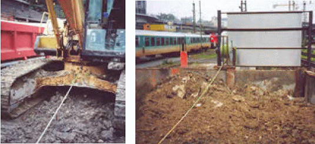
| Abb. 4-6: | Bagger mit Kabeltrommel zum Aufwickeln der Schlepperde. |
In jedem Einzelfall muss sorgfältig geprüft werden, welche Sicherheitsmaßnahmen erforderlich und ausreichend sind, vgl. folgende Beispiele:
Besteht in den o. g. Situationen bei Arbeiten in Fahrleitungsnähe die Gefahr, dass der erforderliche Schutzabstand durch einfaches menschliches Fehlverhalten (z. B. Unachtsamkeit, Konzentration auf die Arbeitsaufgabe) oder durch nicht sicher kontrollierbare Bewegungen (z. B. Pendeln von Lasten) unterschritten wird, dürfen die Arbeiten nur ausgeführt werden, wenn die Fahrleitung ausgeschaltet und bahngeerdet ist.
Die Wirksamkeit der Sicherheitsmaßnahmen wird vom Anlagenverantwortlichen/ Anlagenbeauftragten des Bahnbetreibers überwacht. Der Anlagenverantwortliche/ Anlagenbeauftragte des Bahnbetreibers ist auch Ansprechpartner, falls die Sicherheitsmaßnahmen während der Arbeiten angepasst werden müssen.
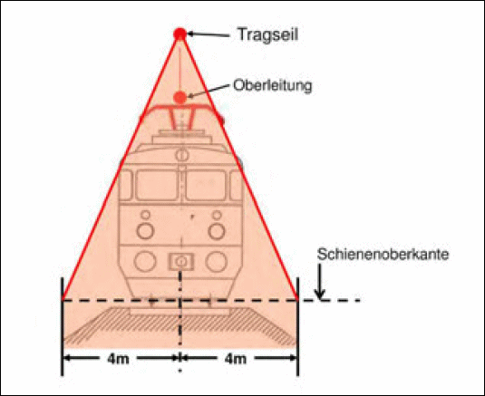
| Abb. 4-7: | Festlegung des Oberleitungsbereichs, in dem leitfähige Konstruktionen (z. B. Gerüste) geerdet werden müssen [38]. |
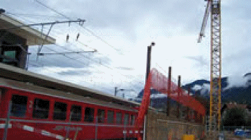
| Abb. 4-8: | Markierungen zur Kenntlichmachung des Schutzabstandes bei Kranarbeiten in Fahrleitungsnähe. |
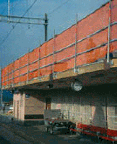
| Abb. 4-9: | Die Abschrankung für Arbeiten auf einem Bahnsteigdach neben einer Oberleitung soll die Gefahr ausschließen, den Schutzabstand zur Oberleitung unbeabsichtigt zu unterschreiten. |
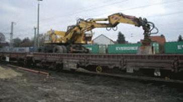
| Abb. 4-10: | Maschinen und Geräte, die auf Eisenbahnwagen unter Oberleitung eingesetzt werden, müssen bahngeerdet sein. |
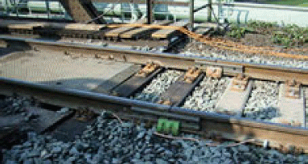
| Abb. 4-11: | Vor dem Durchtrennen der Fahrschiene wird eine elektrisch leitfähige Verbindung für den Rückstrom angebracht. |
Der Schutzabstand bei Arbeiten in der Nähe von Stromschienen beträgt
Die S-Bahn Berlin hat z. B. 750 V Gleichspannung, die S-Bahn Hamburg 1200 V Gleichspannung.
Dieser Abstand darf verringert werden, wenn
Wenn diese Bedingungen nicht eingehalten werden können, muss vor Beginn der Arbeiten die Stromschiene ausgeschaltet oder eine geeignete isolierende Abdeckung durch Elektrofachkräfte oder elektrotechnisch unterwiesene Personen an der Stromschiene angebracht werden. Für Arbeiten in der Nähe von Stromschienen, die nicht von unten bestrichen werden, sind je nach Art des Systems sinngemäße Festlegungen vom Bahnbetreiber zu treffen (z. B. bei der S-Bahn Hamburg bestreicht der Stromabnehmer die Stromschiene seitlich).
Bahnbetreiber fordern für Arbeiten in der Nähe von Fahrleitungsanlagen generell eine bahntechnische Unterweisung [39]. Um Missverständnisse zu vermeiden, sollten die Unterweisungsinhalte schriftlich festgelegt werden.
Inhalte dieser Unterweisung sind z. B.:
Das mit der Unterweisung geforderte Verhalten muss regelmäßig überprüft werden. Die Arbeitsaufsicht kontrolliert, ob die Zweiwegebaggerfahrer die Hubbegrenzung eingeschaltet haben und die vorschriftsmäßige Bahnerdung des Baggers gewährleistet ist.
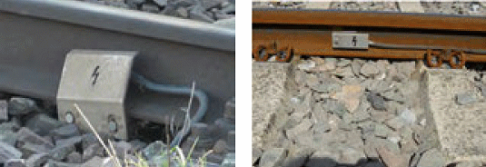
| Abb. 4-12: | Rückleiter und Erdungsleiter, z. B. von elektrischen Weichenheizanlagen: die Abdeckbleche dürfen nur durch anlagenspezifisch unterwiesene Elektrofachkräfte mit Beauftragung durch den Anlagenverantwortlichen gelöst werden. |
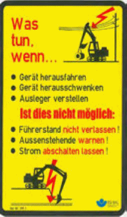
| Abb. 4-13: | Verhaltensanweisung als Aufkleber für die Kabine der Erdbaumaschine. |